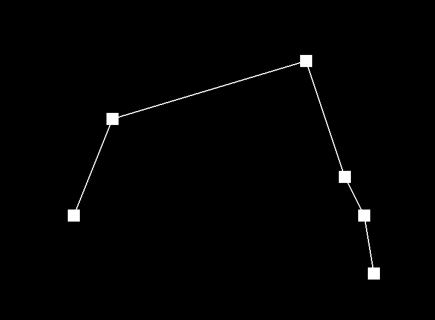
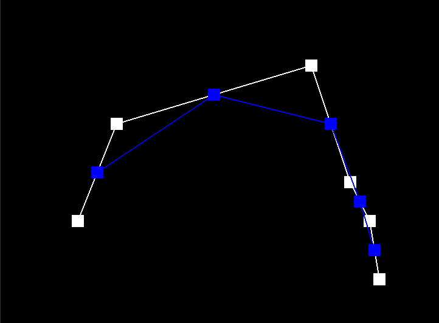
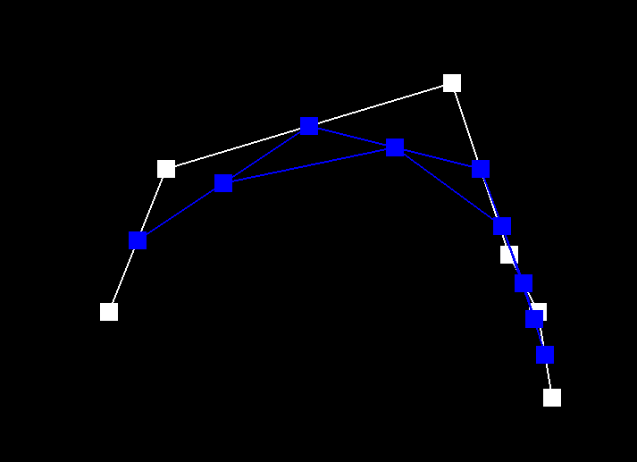
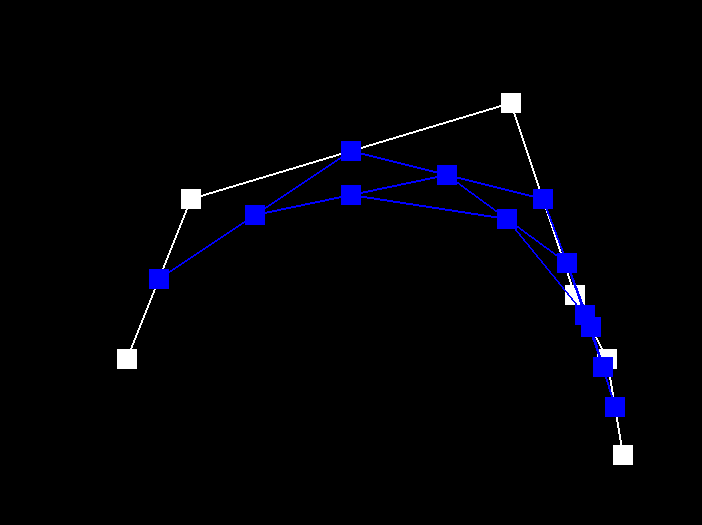
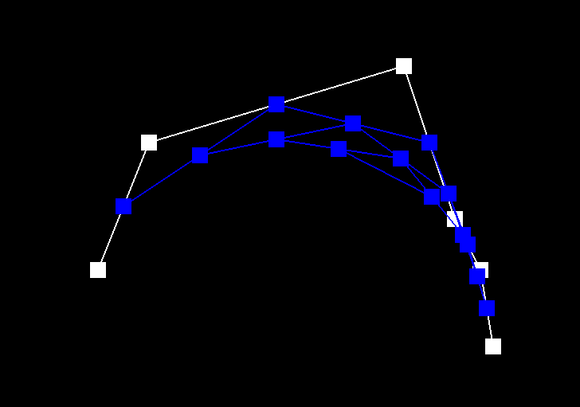
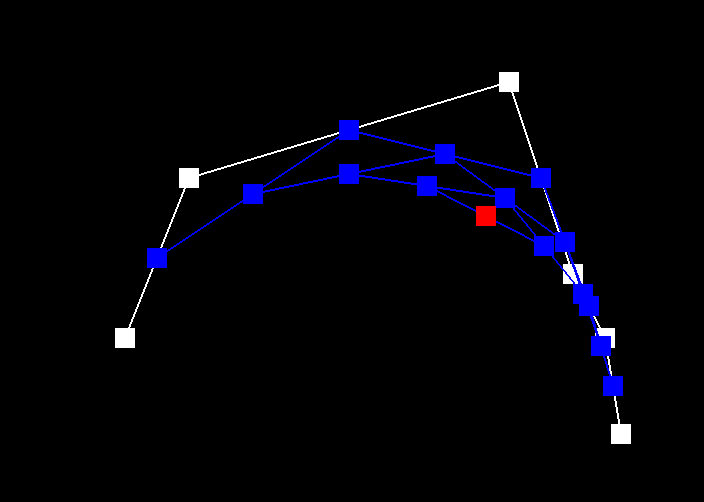
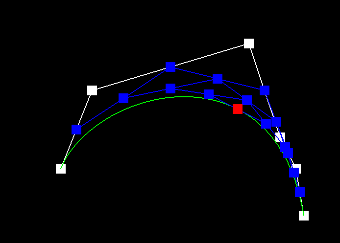
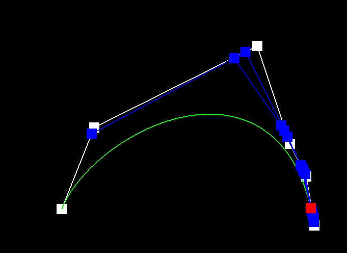
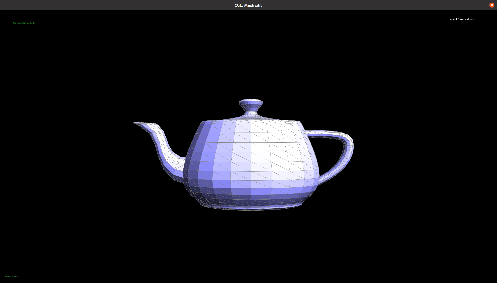
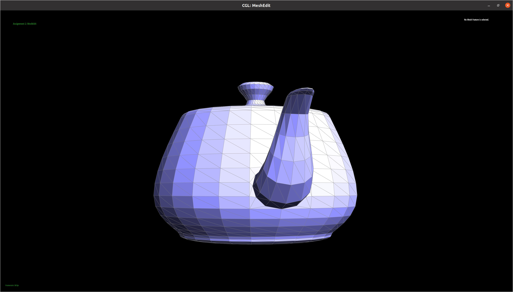

Overview
Give a high-level overview of what you implemented in this project. Think about what you've built as a whole. Share your thoughts on what interesting things you've learned from completing the project.
Section I: Bezier Curves and Surfaces
Part 1: Bezier curves with 1D de Casteljau subdivision
De Casteljau’s algorithm is a recursive algorithm that can evaluate Bezier curves using linear interpolation. Essentially, it takes in n + 1 control points and evaulates a Bezier curve of degree n. The way it works is the following:
- First, for every edge between adjacent control points, we need to find a new control point using linear interpolation.
- Next, connect the newly created adjacent points to get a set of new edges
- Finally, repeat the process until only one point is generated.
In terms of how we implemented this, we implemented the evaluateStep function which took in a vector of control points. We added to our returned lerp'd points (1.0 - t) * points[i] + t * points[i + 1] for each i in the length of control points passed in - 1. evaluateStep is run multiple times until there is only one point.
|

|

|
|

|

|
|

|

|
|

|

|
Part 2: Bezier surfaces with separable 1D de Casteljau subdivision
Section II: Sampling
Part 3: Average normals for half-edge meshes
Part 4: Half-edge flip
We mapped out the pointer assignments that need to be performed in order to flip an edge on a piece of paper and then coded them up. By doing this, we did not face any major debugging challenges. The implementation tip on assigning all relevant pointers, even if redundant, was also very helpful. We use the notations from the figure below:

|
To get pointers to the relevant half-edges, we perform the following operations (cur_edge is the edge to be flipped):
- The half-edge pointed to by cur_edge = cur_halfedge = cur_edge->halfedge()
- The twin of half-edge pointed to by cur_edge = twin = cur_halfedge->twin()
- The next half-edge of the triangle containing the half-edge pointed to by cur_edge = next = cur_halfedge->next()
- The half-edge from c to a = ca = next
- The half-edge from d to c = dc = twin->next()->next()
- The half-edge from a to b = ab = next->next()
- The half-edge from b to d = bd = twin->next()
The pointers to the vertices can be obtained as:
- a = next->next()->vertex();
- b = cur_halfedge->vertex();
- c = twin->vertex();
- d = twin->next()->next()->vertex();
Pointers to the two faces can be obtained as:
- The face containing cur_halfedge = cur_face = cur_halfedge->face()
- The face containing the twin half-edge = twin_face = twin->face()
Once we have all the necessary pointers, we begin re-assigning them. We start with fixing the half-edges pointed to by the faces:
- cur_face->halfedge() = cur_halfedge
- twin->face()->halfedge() = twin
Then, we fixed the half-edges as follows (pointers not mentioned here were left unchanged):
- cur_halfedge
- ->next() = dc
- ->twin() = twin
- ->vertex() = a
- ->edge() = cur_edge
- ->face() = cur_face
- twin
- ->next() = ab
- ->twin() = cur_halfedge
- ->vertex() = d
- ->edge() = cur_edge
- ->face() = twin_face
- ca
- ->next() = cur_halfedge
- ->face() = cur_face
- ab
- ->next() = bd
- ->face() = twin_face
- bd
- ->next() = twin
- ->face() = twin_face
- dc
- ->next() = ca
- ->face() = cur_face
Finally, we fixed the half-edges pointed to by the vertices:
- a->halfedge() = cur_halfedge
- d->halfedge() = twin
- b->halfedge() = bd
- c->halfedge() = ca
|

|
|
|

|

|
Part 5: Half-edge split
Part 6: Loop subdivision for mesh upsampling
Section III: Optional Extra Credit
If you are not participating in the optional mesh competition, don't worry about this section!